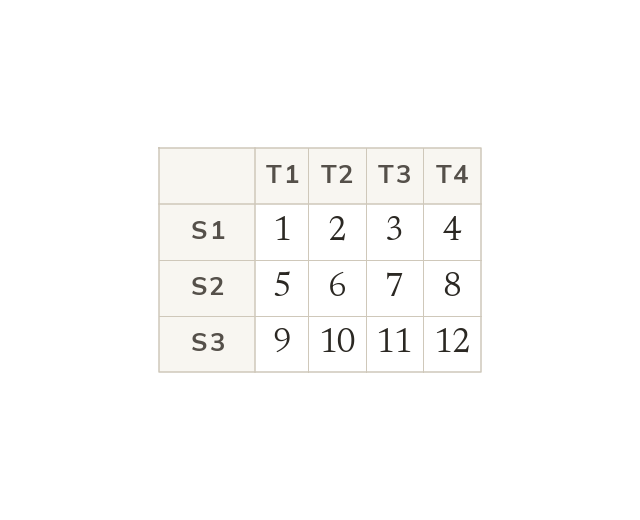
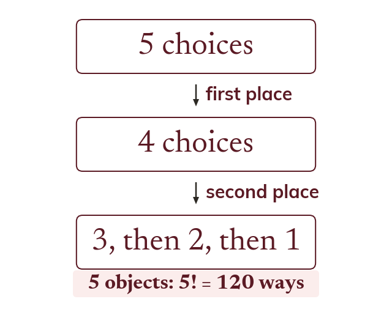
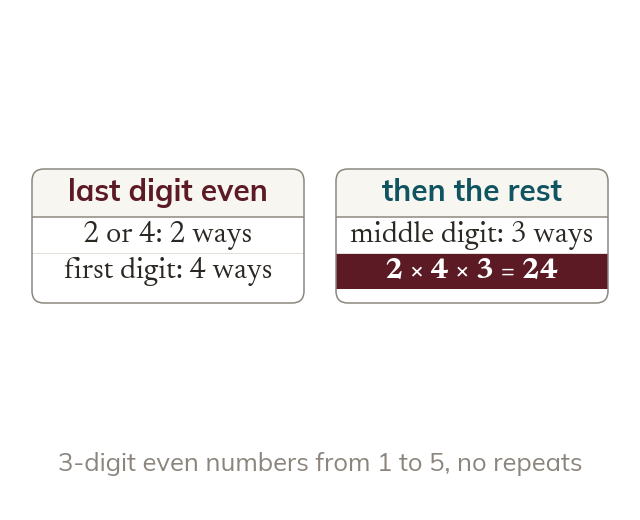
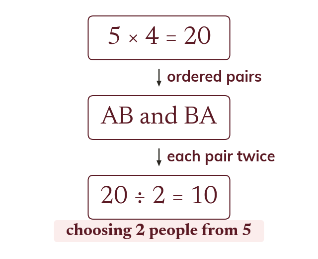

Multiply the options
Independent choices multiply. So shirts and pairs of trousers give outfits.
Counting looks like the easiest thing in the chapter until the question adds that the first digit cannot be zero, or that order does not matter - and then the whole answer turns on which of those two you spotted, not on the arithmetic.
Work down the page at your own pace. Write every answer in your book first, then click to check it.
Read each card, then follow the worked examples one step at a time.

Independent choices multiply. So shirts and pairs of trousers give outfits.

Arranging different objects in a line gives ! ways. That is × ... ×
Pick an answer. If it's wrong, the feedback tells you which mistake it was.
Section The product rule for counting : arrangements in a line, digits with and without repeats, and factorial expressions.
Read each card, then follow the worked examples one step at a time.

A place with a restriction is filled first. The other places then take what is left.

An ordered count lists each group once for every order. Dividing by those orders counts each group once.
Pick an answer. If it's wrong, the feedback tells you which mistake it was.
Section The product rule for counting : arrangements with a parity or position condition, and teams and committees where order does not matter.
Finished? Next lesson: 2.1 Grouping, Quadratics and Difference of Squares.
Log in, then search for a code to practise that skill.